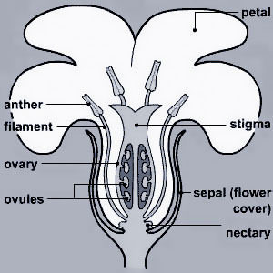

Pollination is the process of sexual reproduction in plants. A male pollen grain is transferred to a female flower (ovule), germinates on the stigma,

and fertilizes the female ovule. All of these steps must occur for a seed to even have a chance of developing. Without pollination, the production of the seeds and fruits that form the bulk and variety of our produce would not be possible.
As in all sexually reproducing organisms, mating results in offspring that contain genes from both parents. Unlike animals, plants cannot seek each other out. They must rely on wind, water, or animals to move pollen between plants. Wind is responsible for pollinating many staple crops, but, many Ontario crops rely heavily or completely on insects for pollination. Bees are the most commonly discussed animal pollinators, but many other insects and even vertebrates can play a role (see Pollinators).
Insects that visit flowers are in search of pollen and nectar. Most flowers produce nectar just to attract pollinators. The higher the concentration of sugar, the more attractive it is to pollinators. Nectar can also contain other useful compounds such as lipids, amino acids, vitamins, and minerals. Pollen is high in protein, carbohydrate, lipids, and vitamins. It is valuable to some adult insects as a food source, and especially to bees looking for food for their young (larvae). A nectary (nectar-producing organ) is usually positioned such that visitors have to contact the reproductive organs to access the nectar.
Plants that can self-fertilize (or self-compatible) plants still benefit from cross-pollination, because it can lead to more or higher quality fruit. In these plants, self-pollination is often an "emergency mechanism" in case cross-pollination does not occur. Because plants prefer to invest their resources in cross-pollinated offspring, fruit that results from self-pollination is usually smaller, misshapen or fewer in number.